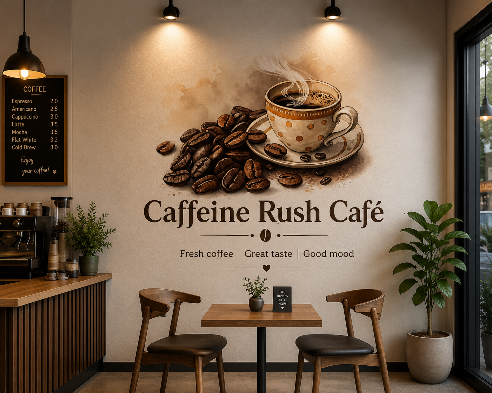

Caffeine Rush Café started with a simple idea: serve genuinely good coffee in a place people actually want to sit in. No shortcuts on the beans, no rush on the atmosphere.
Caffeine Rush Café opened its doors with one espresso machine, a handful of recipes, and a belief that coffee deserves the same care as any fine meal. What began as a single counter has grown into a full café — but the mission hasn't changed.
Every cup is still crafted by hand, every bean is still tasted before it's bought, and every visitor is still treated like a regular from day one. Whether you're meeting friends, settling in to study, or simply taking a break, this is a place built to slow you down for a moment.
We're not trying to be the biggest café in Chennai. We're trying to be the one you think of first.

Single-origin, traceable, and roasted in small batches every week.
Milk, syrups, and pastries sourced locally and used within the day.
Warm lighting, quiet corners, and seating built for staying a while.
Every drink is made to order — never batched, never rushed.
The best way to understand what we do is to walk in and try it yourself.
Visit Us Today